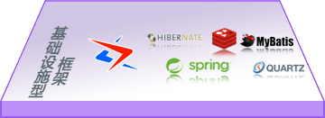
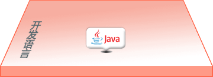
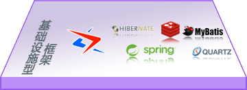
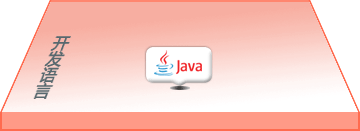

目前市面上已有的java低代码开发平台，例如：JEPasS、JavaFast、Jeeplus、Jeecg等，它们的共同特点是 ：
- 组合使用SpringBoot、Mybatis等开源框架；
- 提炼出一些比较通用的功能性模块代码，便于项目开发中复用；
- 这种所谓的“低代码”仅仅是方便开发过程中省去这些功能的建设，但是这些功能包都有使用局限；
- 在他们官方网站上都有使用范围说明，一般都用来做“OA、CRM、CMS、ERP”等后台管理性质的web系统；
- 其中的“自动代码生成”，也仅仅是对数据模型的增删改刷操作；
- 要使用这些平台做开发，仍然需要手工编写所有代码。
“edk4j开发平台”与Spring、Hibernate等开源框架所处的层面一样，是“基础设施型”的开发平台，
而不是“功能包型”的框架，换句话说，我们拿“edk4j开发平台”能够开发跟他们功能一样的功能包，
而他们反过来就不行，“edk4j开发平台”是开发平台里更底层一级的，没有使用范围的局限性。